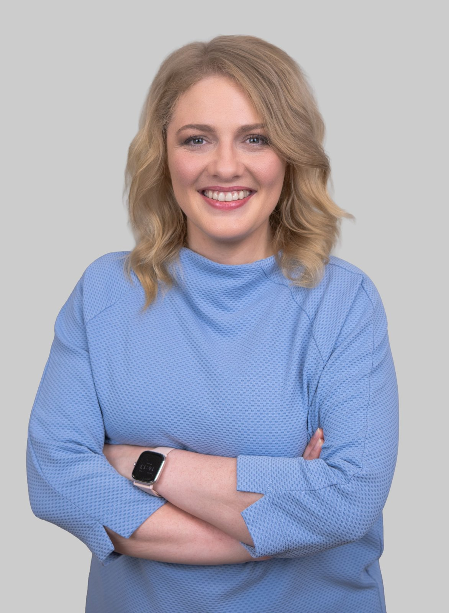

Ing. Karolína Máchová
Lektorka v AI od začátku | Projektová manažerka v Alma Career
„Znáte ten pocit, kdy někdo vysvětluje něco nového, ale vy máte dojem, že začal tak trochu od prostředka? Já ho znám moc dobře. A právě proto mě strašně baví ten opačný moment. Když se díky jednoduchému vysvětlení, dobrému příkladu nebo správné analogii z ‚vůbec nechápu‘ stane rozzářené ‚jo, ahááá, teď už to dává smysl!‘ Přesně o to se snažíme i na našich workshopech. Vytvořit prostředí, kde se nikdo nemusí stydět zeptat, kde se nic nepřeskakuje a kde každý může naskočit opravdu od začátku.“LinkedIn Karolíny